来自之前cnblog的博客
源地址：https://www.cnblogs.com/This-is-Y/p/13532603.html
BadUSB以及编译工具准备
淘宝买的，不包邮，花了30几块大洋
链接就不放了，需要的私信
到手后有一个小包装袋装着，一块芯片，其他三个都是U盘的外壳，拼好长这样
一般来说你都可以去找卖家要写好的脚本和教程
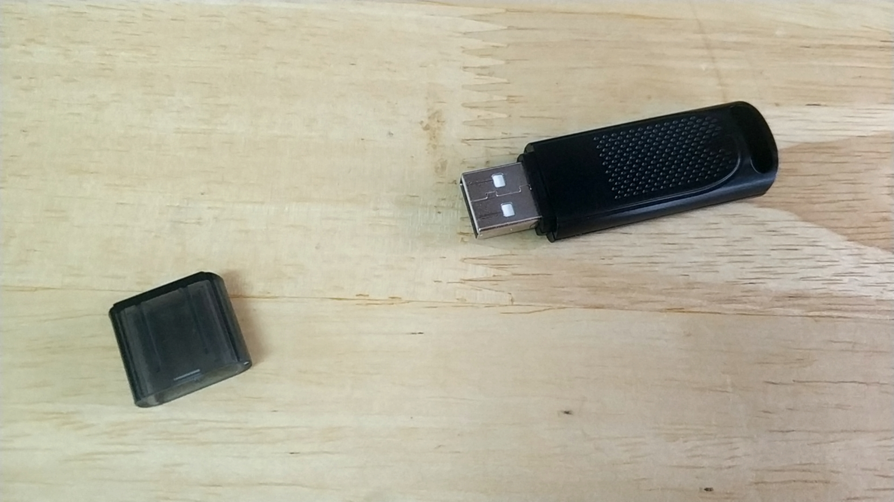编译工具用arduino
官网地址：https://www.arduino.cc/en/Main/Software
也可以直接通过这个地址下载：https://downloads.arduino.cc/arduino-nightly-windows.zip
驱动下载：https://pan.baidu.com/s/1YNpOORUnYBgLCfhy-5m4yA 提取码: vpye
安装完驱动后，打开arduino
在文件-> 首选项 中，添加一条http://digistump.com/package_digistump_index.json
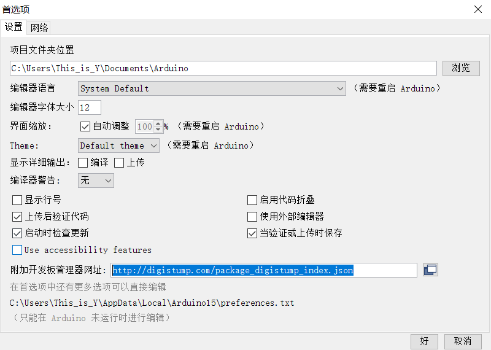
再打开工具-> 开发板->开发板管理器
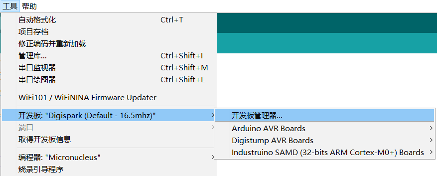
等待下载完毕索引，搜索Digistump，下载，下载失败的话，就科学网上冲浪

下载完成后，在切换到Digistump
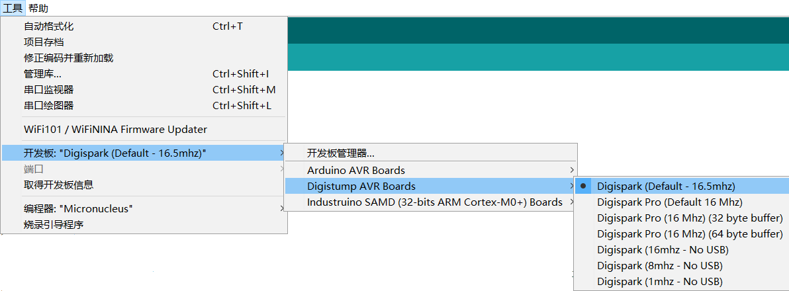
这样的话，在打开，示例中可以找到这些东西
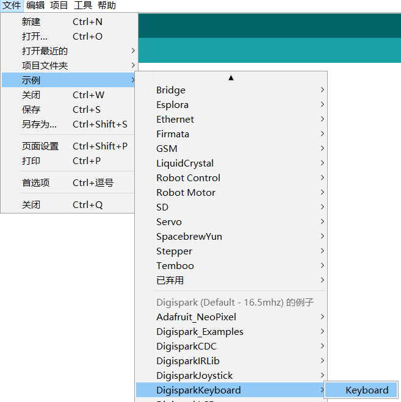写好代码按√编译，按->上传到U盘中，
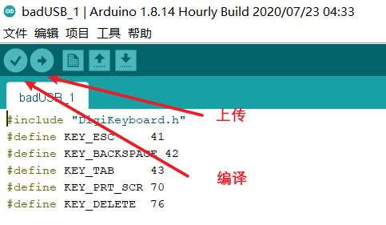一般编译用来检测代码是否有问题，当没问题后，就可以点上传，等到下面出现这个提示的时候，就可以插上U盘等待写入了
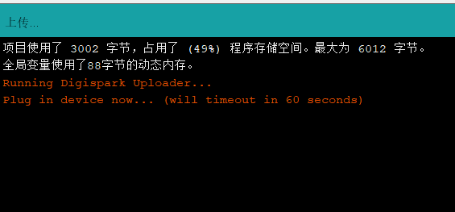
CS生成文件
打开cs，建立监听器
监听器默认的就行
选择payload generator
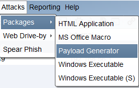
选择powershell
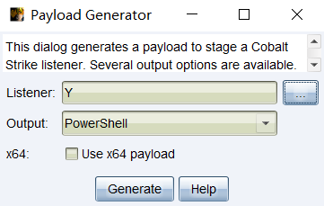然后会生成一个ps1文件
混淆免杀
使用Invoke-Obfuscation
github地址：github:https://github.com/danielbohannon/Invoke-Obfuscation
在powershell中cd到Invoke-Obfuscation文件目录下，或者直接在Invoke-Obfuscation中打开powershell
执行
Import-Module .\Invoke-Obfuscation.psd1
Invoke-Obfuscation
可能会报错，如果是未找到模块，则是文件路径不对，如果是禁止运行脚本
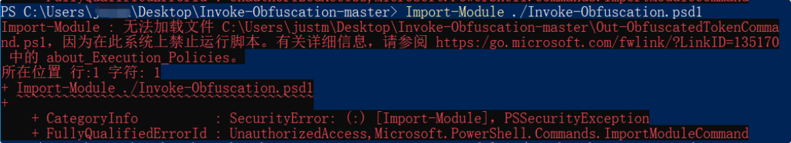出现这种情况以管理员权限打开powershell
执行Set-ExecutionPolicy Unrestricted，选择y
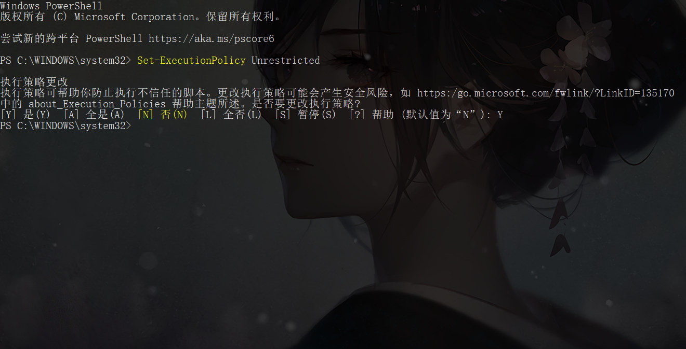
之后重新打开powershell窗口就好了
正确执行完后是这样的
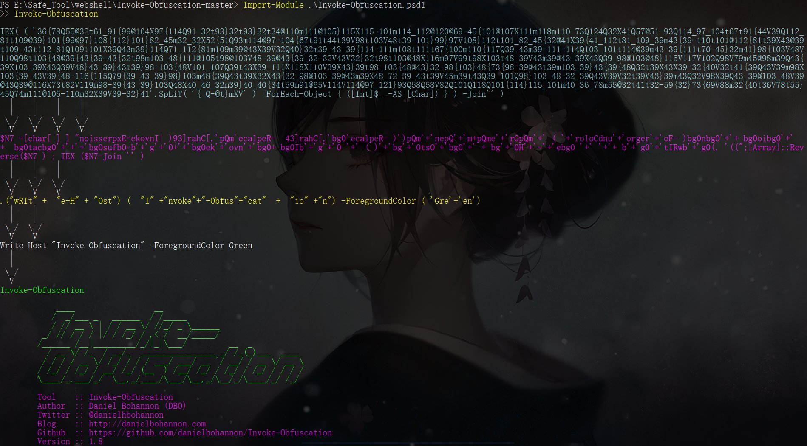然后执行命令，指定待处理的Ps1文件
set scriptpath 文件路径
或者指定待处理的ps代码
set scriptblock ‘echo xss’
输入encoding 并选择编码方式
输入数字就行
输出结果
out 文件位置
最后
改完了后，把文件上传到服务器，因为我比较懒，整理一个内网穿透工具，在自己电脑上用phpstudy简单弄了一下
搞完后
在arduino中把代码上传到u盘中
代码如下：
之后编译，上传，在出现这个提示后，把badUSB插入电脑就好了，
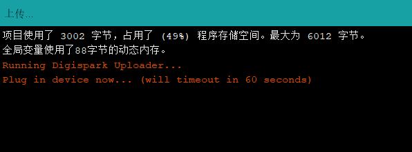
之后可以在自己电脑上插入测试一下。